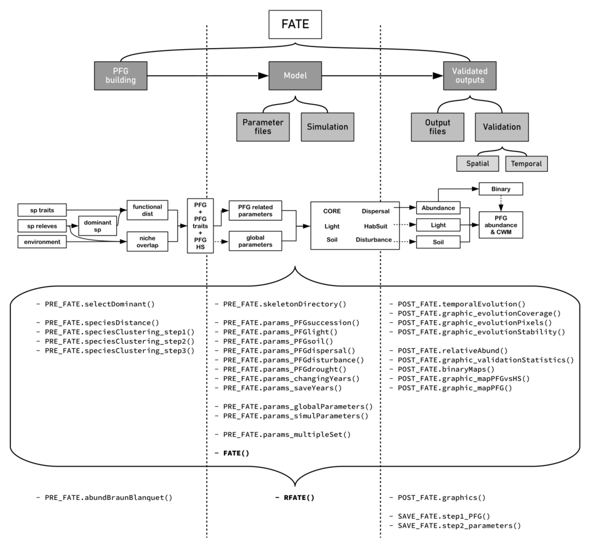

RFate workflow
FATE is a spatially and temporally explicit vegetation model. It uses plant functional groups (PFG) and integrates important mechanisms driving vegetation dynamics, structure and diversity, such as demographic cycle, obviously, but also seeds dispersal, abiotic filtering or biotic interactions (through the competition for resources like light availability or soil suitability).
If primary succession is the most obvious ecological process that can be modelled with FATE, events related to secondary succession can be represented as well using the various FATE add-on modules : disturbances (mowing, grazing, fire..), drought event, invasive species.
As vegetation modelling can be challenging (data gathering, parameterization, handling results…), RFate provides user-friendly functions to go through the whole FATE workflow. Links below present some guidance documents, for the vegetation model as well as for the Rpackage.
0. Understand how FATE works :
1. Build PFG :
2. Run a FATE simulation :
- understand how to run a simulation,
- the different modules that can be used,
- and how to prepare the corresponding parameter files
3. Analyze the outputs :
